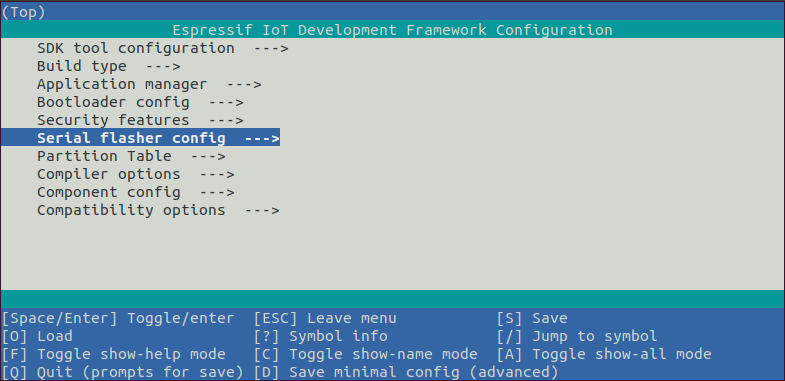
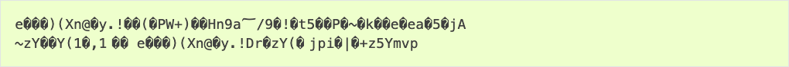

Стандартная настройка набора инструментов для Linux и macOS
Установка шаг за шагом
Это подробная дорожная карта, которая проведет вас через процесс установки.
Настройка среды разработки
Ниже приведены шаги по настройке ESP-IDF для вашего ESP32.
Шаг 1. Установка необходимых компонентов
Для использования ESP-IDF с ESP32 необходимо установить несколько программных пакетов, соответствующих вашей операционной системе. Это руководство по установке поможет вам установить всё необходимое в системах Linux и macOS.
Для пользователей Linux
Для компиляции с использованием ESP-IDF вам понадобятся следующие пакеты. Команда, которую нужно выполнить, зависит от используемого дистрибутива Linux:
sudo apt-get install git wget flex bison gperf python3 python3-pip python3-venv cmake ninja-build ccache libffi-dev libssl-dev dfu-util libusb-1.0-0
sudo yum -y update && sudo yum install git wget flex bison gperf python3 cmake ninja-build ccache dfu-util libusbx
CentOS 7 по-прежнему поддерживается, но для лучшего пользовательского опыта рекомендуется использовать CentOS версии 8.
sudo pacman -S --needed gcc git make flex bison gperf python cmake ninja ccache dfu-util libusb
Примечание
Для пользователей macOS
ESP-IDF будет использовать версию Python, установленную по умолчанию в macOS.
brew install cmake ninja dfu-util
sudo port install cmake ninja dfu-util
Примечание
Если на каком-либо этапе отображается подобная ошибка:
xcrun: error: invalid active developer path (/Library/Developer/CommandLineTools), missing xcrun at: /Library/Developer/CommandLineTools/usr/bin/xcrun
Для продолжения работы вам потребуется установить инструменты командной строки XCode. Вы можете установить их, запустив .xcode-select --install
Пользователи Apple M1
Если вы используете платформу Apple M1 и видите подобную ошибку:
WARNING: directory for tool xtensa-esp32-elf version esp-2021r2-patch3-8.4.0 is present, but tool was not found
ERROR: tool xtensa-esp32-elf has no installed versions. Please run 'install.sh' to install it.
или:
zsh: bad CPU type in executable: ~/.espressif/tools/xtensa-esp32-elf/esp-2021r2-patch3-8.4.0/xtensa-esp32-elf/bin/xtensa-esp32-elf-gcc
Затем вам нужно будет установить Apple Rosetta 2, запустив
/usr/sbin/softwareupdate --install-rosetta --agree-to-license
Установка Python 3
Согласно примечаниям к выпуску macOS Catalina 10.15 , использование Python 2.7 не рекомендуется, и Python 2.7 не будет включен по умолчанию в будущие версии macOS. Проверьте, какая версия Python у вас установлена:
Если вывод похож на , ваш интерпретатор по умолчанию — Python 2.7. В этом случае также проверьте, не установлен ли на вашем компьютере Python 3:Python 2.7.17
Если приведенная выше команда возвращает ошибку, это означает, что Python 3 не установлен.
Ниже приведен обзор шагов по установке Python 3.
Шаг 2. Получите ESP-IDF
Для создания приложений для ESP32 вам понадобятся программные библиотеки, предоставляемые Espressif в репозитории ESP-IDF .
Чтобы получить ESP-IDF, перейдите в каталог установки и клонируйте репозиторий с помощью , следуя приведенным ниже инструкциям для вашей операционной системы.git clone
Откройте Терминал и выполните следующие команды:
cd ~/esp
git clone -b release/v5.1 --recursive https://github.com/espressif/esp-idf.git
ESP-IDF будет загружен в формат ~/esp/esp-idf.
Информацию о том, какую версию ESP-IDF следует использовать в конкретной ситуации, см. в разделе «Версии ESP-IDF».
Шаг 3. Настройте инструменты
Помимо ESP-IDF вам также необходимо установить инструменты, используемые ESP-IDF, такие как компилятор, отладчик, пакеты Python и т. д., для проектов, поддерживающих ESP32.
./install.sh esp32
или с рыбьей раковиной
./install.fish esp32
Приведённые выше команды устанавливают инструменты только для ESP32. Если вы планируете разрабатывать проекты для большего количества микросхем, перечислите все из них и выполните, например:
./install.sh esp32,esp32s2
или с рыбьей раковиной
./install.fish esp32,esp32s2
Чтобы установить инструменты для всех поддерживаемых целей, выполните следующую команду:
./install.sh all
или с рыбьей раковиной
./install.fish all
Примечание
Для пользователей macOS, если на каком-либо этапе появляется такая ошибка:
<urlopen error [SSL: CERTIFICATE_VERIFY_FAILED] certificate verify failed: unable to get local issuer certificate (_ssl.c:xxx)
Вы можете запустить Python в папке вашего компьютера для установки сертификатов. Подробнее см. в разделе « Ошибка загрузки при установке инструментов ESP-IDF» .Install Certificates.command
Альтернативные загрузки файлов
Установщик инструментов загружает ряд файлов, прикреплённых к релизам GitHub. Если доступ к GitHub медленный, можно настроить переменную окружения, чтобы выбрать сервер загрузки Espressif для загрузки ресурсов GitHub.
Примечание
Этот параметр управляет только отдельными инструментами, загруженными из релизов GitHub, он не изменяет URL-адреса, используемые для доступа к каким-либо репозиториям Git.
Чтобы при установке инструментов отдать предпочтение серверу загрузки Espressif, используйте следующую последовательность команд при запуске install.sh:
export IDF_GITHUB_ASSETS="dl.espressif.com/github_assets"
./install.sh
Настройка пути установки инструментов
Скрипты, представленные на этом этапе, устанавливают инструменты компиляции, необходимые ESP-IDF, в домашний каталог пользователя: $HOME/.espressifв Linux. Если вы хотите установить инструменты в другой каталог, задайте переменную окружения IDF_TOOLS_PATHперед запуском скриптов установки. Убедитесь, что у вашей учётной записи есть достаточные права на чтение и запись по этому пути.
При изменении IDF_TOOLS_PATHубедитесь, что ему присваивается одно и то же значение каждый раз при выполнении сценария установки ( install.bat, install.ps1или install.sh) и сценария экспорта ( export.bat, export.ps1или ).export.sh
Шаг 4. Настройте переменные среды
Установленные инструменты пока не добавлены в переменную окружения PATH. Чтобы инструменты можно было использовать из командной строки, необходимо настроить некоторые переменные окружения. ESP-IDF предоставляет другой скрипт для этого.
В терминале, где вы собираетесь использовать ESP-IDF, выполните:
или для fish (поддерживается только с версии fish 3.0.0):
. $HOME/esp/esp-idf/export.fish
Обратите внимание на пробел между начальной точкой и путем!
Если вы планируете часто использовать esp-idf, вы можете создать псевдоним для выполнения export.sh:
alias get_idf='. $HOME/esp/esp-idf/export.sh'
Теперь вы можете запустить get_idfнастройку или обновление среды esp-idf в любом терминальном сеансе.
Технически вы можете добавить его export.shнапрямую в профиль вашей оболочки, однако это не рекомендуется. Это активирует виртуальную среду IDF в каждом терминальном сеансе (включая те, где IDF не требуется), что сводит на нет эффективность виртуальной среды и, вероятно, повлияет на работу другого программного обеспечения.
Шаг 5. Первые шаги по ESP-IDF
Теперь, когда все требования выполнены, следующая тема расскажет вам, как начать свой первый проект.
Это руководство поможет вам сделать первые шаги в использовании ESP-IDF. Следуйте этому руководству, чтобы начать новый проект на ESP32, собрать его, прошить и отслеживать выходные данные устройства.
Примечание
Если вы еще не установили ESP-IDF, перейдите в раздел «Установка» и следуйте инструкциям, чтобы получить все программное обеспечение, необходимое для использования этого руководства.
Начать проект
Теперь вы готовы подготовить приложение для ESP32. Вы можете начать с проекта get-started/hello_world из каталога примеров в ESP-IDF.
Важный
Система сборки ESP-IDF не поддерживает пробелы в путях к ESP-IDF или к проектам.
Скопируйте проект get-started/hello_world в ~/espкаталог:
cp -r $IDF_PATH/examples/get-started/hello_world .
Примечание
В каталоге примеров ESP-IDF есть ряд примеров проектов . Вы можете скопировать любой проект, как описано выше, и запустить его. Также можно собирать примеры на месте, не копируя их предварительно.
Подключите ваше устройство
Теперь подключите плату ESP32 к компьютеру и проверьте, под каким последовательным портом она видна.
Последовательные порты имеют следующие шаблоны именования:
Если вы не уверены, как проверить имя последовательного порта, см. раздел « Установка последовательного соединения с ESP32» для получения полной информации.
Примечание
Сохраните имя порта, так как оно понадобится вам на следующих этапах.
Настройте свой проект
Перейдите в свой hello_worldкаталог, установите ESP32 в качестве цели и запустите утилиту конфигурации проекта menuconfig.
idf.py set-target esp32
idf.py menuconfig
После открытия нового проекта необходимо сначала задать целевой объект с помощью . Обратите внимание, что существующие сборки и конфигурации проекта, если таковые имеются, будут очищены и инициализированы в ходе этого процесса. Целевой объект можно сохранить в переменной окружения, чтобы вообще пропустить этот шаг. Дополнительную информацию см. в разделе Выбор целевого чипа: set-target .idf.py set-target esp32
Если предыдущие шаги были выполнены правильно, появится следующее меню:
Конфигурация проекта - Главное окно
Это меню используется для настройки переменных, специфичных для проекта, например, имени и пароля сети Wi-Fi, скорости процессора и т. д. Настройку проекта с помощью menuconfig можно пропустить для «hello_world», поскольку этот пример работает с конфигурацией по умолчанию.
Внимание
Если вы используете плату ESP32-DevKitC с модулем ESP32-SOLO-1 или плату ESP32-DevKitM-1 с модулем ESP32-MIN1-1(1U) , включите одноядерный режим ( CONFIG_FREERTOS_UNICORE ) в menuconfig перед прошивкой примеров.
Примечание
Цвета меню могут отличаться на вашем терминале. Вы можете изменить внешний вид с помощью параметра . Для получения дополнительной информации, --styleпожалуйста, запустите .idf.py menuconfig --help
Если вы используете одну из поддерживаемых плат разработки, вы можете ускорить разработку, воспользовавшись пакетом поддержки плат. Подробнее см. в разделе «Дополнительные советы» .
Построить проект
Соберите проект, выполнив:
Эта команда скомпилирует приложение и все компоненты ESP-IDF, а затем сгенерирует загрузчик, таблицу разделов и двоичные файлы приложения.
Running cmake in directory /path/to/hello_world/build
Executing "cmake -G Ninja --warn-uninitialized /path/to/hello_world"...
Warn about uninitialized values.
-- Found Git: /usr/bin/git (found version "2.17.0")
-- Building empty aws_iot component due to configuration
-- Component names: ...
-- Component paths: ...
... (more lines of build system output)
[527/527] Generating hello_world.bin
esptool.py v2.3.1
Project build complete. To flash, run this command:
../../../components/esptool_py/esptool/esptool.py -p (PORT) -b 921600 write_flash --flash_mode dio --flash_size detect --flash_freq 40m 0x10000 build/hello_world.bin build 0x1000 build/bootloader/bootloader.bin 0x8000 build/partition_table/partition-table.bin
or run 'idf.py -p PORT flash'
Если ошибок нет, сборка завершится генерацией двоичных .bin-файлов прошивки.
Вспышка на устройстве
Чтобы прошить двоичные файлы, которые вы только что собрали для ESP32 на предыдущем шаге, вам необходимо выполнить следующую команду:
Замените PORTна имя USB-порта вашей платы ESP32. Если порт PORTне указан, idf.py попытается автоматически подключиться к доступным USB-портам.
Более подробную информацию об idf.pyаргументах см . в idf.py.
Примечание
Эта опция flashавтоматически собирает и прошивает проект, поэтому запуск не требуется.idf.py build
Возникли проблемы при перепрошивке? Подробнее см. на странице «Устранение неполадок при перепрошивке» или в статье «Установка последовательного соединения с ESP32» .
Нормальная работа
При перепрошивке вы увидите выводной журнал, подобный следующему:
esptool.py --chip esp32 -p /dev/ttyUSB0 -b 460800 --before=default_reset --after=hard_reset write_flash --flash_mode dio --flash_freq 40m --flash_size 2MB 0x8000 partition_table/partition-table.bin 0x1000 bootloader/bootloader.bin 0x10000 hello_world.bin
esptool.py v3.0-dev
Serial port /dev/ttyUSB0
Connecting........_
Chip is ESP32D0WDQ6 (revision 0)
Features: WiFi, BT, Dual Core, Coding Scheme None
Crystal is 40MHz
MAC: 24:0a:c4:05:b9:14
Uploading stub...
Running stub...
Stub running...
Changing baud rate to 460800
Changed.
Configuring flash size...
Compressed 3072 bytes to 103...
Writing at 0x00008000... (100 %)
Wrote 3072 bytes (103 compressed) at 0x00008000 in 0.0 seconds (effective 5962.8 kbit/s)...
Hash of data verified.
Compressed 26096 bytes to 15408...
Writing at 0x00001000... (100 %)
Wrote 26096 bytes (15408 compressed) at 0x00001000 in 0.4 seconds (effective 546.7 kbit/s)...
Hash of data verified.
Compressed 147104 bytes to 77364...
Writing at 0x00010000... (20 %)
Writing at 0x00014000... (40 %)
Writing at 0x00018000... (60 %)
Writing at 0x0001c000... (80 %)
Writing at 0x00020000... (100 %)
Wrote 147104 bytes (77364 compressed) at 0x00010000 in 1.9 seconds (effective 615.5 kbit/s)...
Hash of data verified.
Leaving...
Hard resetting via RTS pin...
Done
Если по завершении процесса прошивки проблем не возникнет, плата перезагрузится и запустит приложение «hello_world».
Если вы хотите использовать Eclipse или VS Code IDE вместо запуска idf.py, ознакомьтесь с Eclipse Plugin , VSCode Extension .
Мониторинг выходных данных
Чтобы проверить, действительно ли запущен «hello_world», введите (не забудьте заменить PORT на имя вашего последовательного порта).idf.py -p PORT monitor
Эта команда запускает приложение IDF Monitor :
Running idf_monitor in directory [...]/esp/hello_world/build
Executing "python [...]/esp-idf/tools/idf_monitor.py -b 115200 [...]/esp/hello_world/build/hello_world.elf"...
--- idf_monitor on <PORT> 115200 ---
--- Quit: Ctrl+] | Menu: Ctrl+T | Help: Ctrl+T followed by Ctrl+H ---
ets Jun 8 2016 00:22:57
rst:0x1 (POWERON_RESET),boot:0x13 (SPI_FAST_FLASH_BOOT)
ets Jun 8 2016 00:22:57
...
После прокрутки журналов запуска и диагностики вы должны увидеть сообщение «Hello world!», выведенное приложением.
Hello world!
Restarting in 10 seconds...
This is esp32 chip with 2 CPU core(s), WiFi/BT/BLE, silicon revision 1, 2 MB external flash
Minimum free heap size: 298968 bytes
Restarting in 9 seconds...
Restarting in 8 seconds...
Restarting in 7 seconds...
Для выхода из монитора IDF используйте сочетание клавиш Ctrl+].
Если монитор IDF выходит из строя вскоре после загрузки или вместо сообщений, указанных выше, вы видите случайный мусор, подобный приведённому ниже, вероятно, на вашей плате используется кварцевый резонатор с частотой 26 МГц. Большинство плат разработки используют частоту 40 МГц, поэтому ESP-IDF использует эту частоту по умолчанию.
Если у вас возникла такая проблема, сделайте следующее:
В текущей версии ESP-IDF основные частоты XTAL, поддерживаемые ESP32, следующие:
Примечание
Вы можете объединить сборку, перепрошивку и мониторинг в один шаг, выполнив:
Смотрите также:
Это все, что вам нужно для начала работы с ESP32!
Теперь вы готовы попробовать другие примеры или перейти непосредственно к разработке собственных приложений.
Важный
Некоторые примеры не поддерживают ESP32, поскольку необходимое оборудование не включено в ESP32 и поэтому не может поддерживаться.
Если вы создаёте пример, проверьте наличие таблицы в файле README. Если она присутствует, включая целевую платформу ESP32, или таблица отсутствует, пример будет работать на ESP32.Supported Targets
Дополнительные советы
Проблемы с правами доступа /dev/ttyUSB0
В некоторых дистрибутивах Linux при перепрошивке ESP32 может возникнуть сообщение об ошибке. Эту проблему можно решить, добавив текущего пользователя в группу dialout .Failed to open port /dev/ttyUSB0
Совместимость с Python
ESP-IDF поддерживает Python 3.7 и более поздние версии. Рекомендуется обновить операционную систему до последней версии, удовлетворяющей этому требованию. Другие варианты включают установку Python из исходных кодов или использование системы управления версиями Python, например pyenv .
Начните с пакета поддержки совета директоров
Для ускорения создания прототипов на некоторых платах разработки можно использовать пакеты поддержки плат (BSP) , которые упрощают инициализацию конкретной платы до нескольких вызовов функций.
BSP обычно поддерживает все аппаратные компоненты, предоставляемые на плате разработки. Помимо функций определения распиновки и инициализации, BSP поставляется с драйверами для внешних компонентов, таких как датчики, дисплеи, аудиокодеки и т. д.
BSP распространяются через IDF Component Manager , поэтому их можно найти в реестре компонентов IDF .
Вот пример того, как добавить ESP-WROVER-KIT BSP в ваш проект:
idf.py add-dependency esp_wrover_kit
Дополнительные примеры использования BSP можно найти в папке примеров BSP .
Флэш-стирание
Также возможно стирание флеш-памяти. Чтобы стереть всю флеш-память, выполните следующую команду:
Для стирания данных OTA, если они есть, вы можете выполнить следующую команду:
Выполнение команды стирания флеш-памяти может занять некоторое время. Не отключайте устройство во время процесса стирания флеш-памяти.
Совет: обновление ESP-IDF
Рекомендуется периодически обновлять ESP-IDF, поскольку в новых версиях исправлены ошибки и/или добавлены новые функции. Обратите внимание, что каждая основная и второстепенная версия ESP-IDF имеет свой период поддержки, и когда срок поддержки одной из веток релиза подходит к концу (EOL), всем пользователям рекомендуется обновить свои проекты до более новых версий ESP-IDF. Подробнее о сроках поддержки см. в разделе «Версии ESP-IDF» .
Самый простой способ выполнить обновление — удалить существующую esp-idfпапку и клонировать ее заново, как если бы вы выполняли первоначальную установку, описанную в Шаге 2. Получите ESP-IDF .
Другой вариант — обновить только то, что изменилось. Процедура обновления зависит от используемой версии ESP-IDF .
После обновления ESP-IDF повторно запустите скрипт установки, если для новой версии ESP-IDF требуются другие версии инструментов. См. инструкции на шаге 3. Настройка инструментов .
После установки новых инструментов обновите среду с помощью скрипта Export. См. инструкции на шаге 4. Настройте переменные среды .
Связанные документы